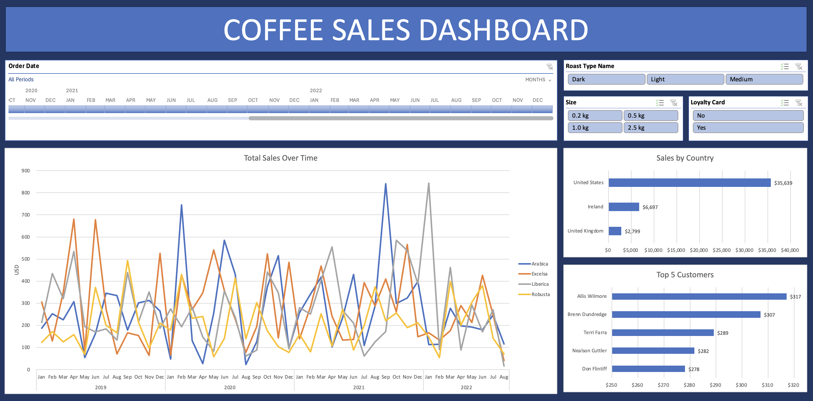

SELECT first_name,
last_name,
email
FROM candidates
WHERE role = 'data analyst'
ORDER BY skill DESC
LIMIT 1;| first_name | last_name | |
|---|---|---|
| mominah | anwar | mominahanwar0@gmail.com |
projects
-
Data Model Optimisation
Data model redesign, personal project
I cleaned up a complex and messy data model with slow report load times using the star schema. I extracted 6 facts and 6 dimensions from the data model, reducing the model size by 25%. I also created common measures for the model using DAX.
-

Coffee Sales Dashboard
Interactive sales dashboard, guided project
An interactive Excel dashboard tracking coffee sales by month, country and roast type across 1,000 orders. Built with pivot tables, XLOOKUP and slicers, so users can filter by year and loyalty status. It shows that the US accounts for 78% of revenue and that Robusta sells the least.
certifications
skills
BI & Reporting
- Power BI
- DAX
- Power Query
- Data modelling
- Data cleaning
- Row-Level Security (RLS)
- Dashboard design
- Automated reporting
- Paginated reports
Data & Programming
- SQL
- Python
- NumPy
- Matplotlib
- Jupyter
- Git & GitHub
Spreadsheets
- Excel
- Pivot tables
- Lookups
- VBA & macros
- Conditional formatting
- Google sheets
Research & Communication
- Technical Writing
- Documentation
- Requirements gathering
- KPI analysis
- User research
- Thematic analysis
experience
| May 2026 – Present |
Freelance Technical Writer for a Finance & Tech blog
Have worked on 25+ articles for my client Ensured quality of each article by reviewing all aspects of the article, including factual correction, reader comprehension, styling and formatting |
|---|---|
| Nov 2024 – Mar 2025 |
LLM Trainer at Turing Enterprises Inc.
Trained Microsoft’s and Meta’s LLMs using Reinforcement Learning from Human Feedback Consistently scored 9+/10 on quality checks of my work, placing in top performing employees |
| Oct 2022 – Mar 2024 |
Technical Content Engineer at Educative Axis SMC (Pvt) Ltd.
Led 3 projects from start to completion Coordinated with 4 other teams for each project, ensuring smooth delivery Worked on overall 10+ projects, which included working alongside 5+ international authors |
| Sep 2020 – May 2022 |
Teaching Assistant at Lahore University of Management Sciences (LUMS)
TAed for 4 different courses under 4 different professors Assisted in classes, labs, oversaw course capstone projects, and provided guidance to students where needed |
If you are interested in working with me, please reach out via email.